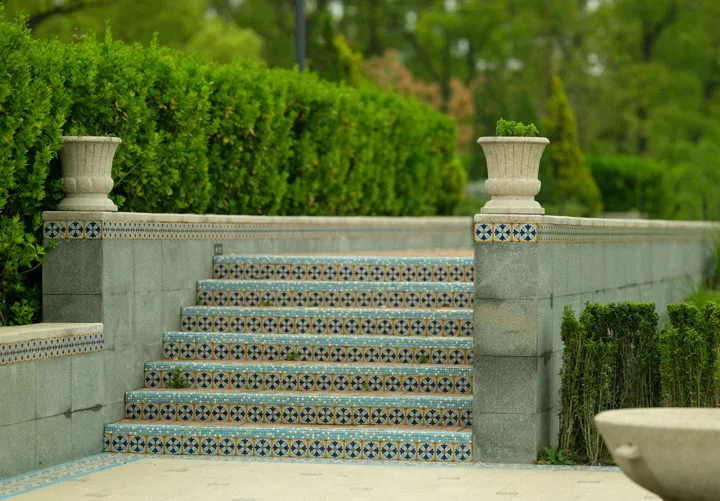
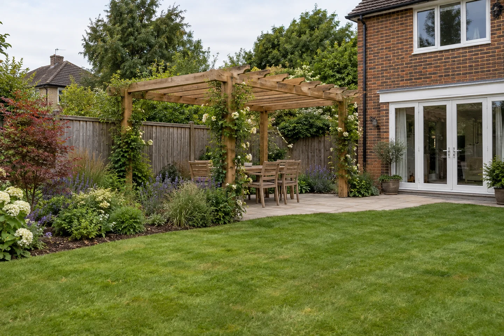
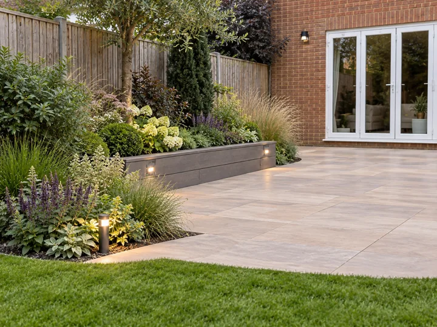
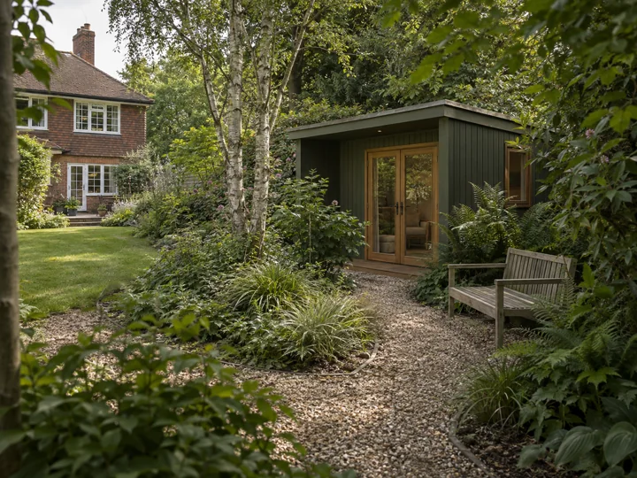

Character & tradition
Natural textures, brick, timber and reclaimed details. Explore a finish that sits comfortably with the age and character of your home.
Materials are personal. From traditional craftsmanship to contemporary finishes, there is a whole world of possibilities to explore.
You might love the character of natural stone, the warmth of timber, a crisp modern surface or an unexpected combination. Choosing the right mix is a core part of planning your garden with you.
We help you explore, compare and refine those choices around your home, your priorities and your investment. Bring your own ideas, photographs and references. Our starting point is what you want to achieve.
Tell us what you’re drawn to
These are starting points for a conversation. The possibilities extend far beyond the examples here, across timber, stone, brick, porcelain, metal, composite and reclaimed materials.

Natural textures, brick, timber and reclaimed details. Explore a finish that sits comfortably with the age and character of your home.

Considered lines, refined surfaces and carefully chosen contrasts. Modern materials can work alongside both new and older homes.

Old with new. Smooth with textured. A favourite colour or a detail you’ve seen elsewhere. There is no need to fit one style.
We plan and deliver garden projects, bringing together materials and suppliers to suit your brief. Our role is to help you make confident choices and bring them together in the build. We work through the practical detail and explain what matters in plain English.
Colour, texture, scale and the way materials meet. We look at the house, planting and existing features so the whole garden feels considered.
Space to sit, work, play and move around. We consider comfort, access, privacy and the needs of children, pets and visitors.
Sun, shade, exposure, levels and where water goes. We check what the site needs before settling on surfaces and finishes.
Preparation, drainage, edges, joints and connections. We plan the work behind the finished surface and identify specialist input or approvals needed.
How materials age, what care they need and how repairs or replacement would work. The right choice should suit the upkeep you want to take on.
Materials, installation and ongoing care, considered together. We discuss what to retain or reuse, where to spend and whether to phase the work.
Share what appeals to you, what you want to change and anything you already love about your garden.
We bring relevant materials, suppliers and samples into the discussion, balancing the finish with the practical needs of your project.
We agree the chosen finish, specification, scope and costs before ordering or starting the relevant work. You approve significant changes.
Whether it’s a garden building, decking, gates and fencing or a wider landscaping project, the selection grows out of your brief.
A thoughtfully planned garden is an investment in your home and the time you spend there. We help you decide what value means for you, then direct the budget towards it.
A place you want to use: room to eat together, work, play, grow or simply sit outside. Start with the difference you want the garden to make to everyday life.
Look beyond the initial material price. We weigh preparation, installation, upkeep and future repairs, helping you avoid spending on finishes that don’t suit the way you live.
A well-presented garden can help buyers picture themselves at home. Any effect on sale price depends on the property and local market; landscaping spend is not a guaranteed financial return.
If resale is a priority, we recommend getting a local UK estate agent’s or valuer’s view before committing to a major project. We can then plan around both your enjoyment now and your intentions for the home.
Rightmove’s 2020 study of garden aspect and asking prices shows that garden characteristics can matter in the housing market. It compared properties, not the return on landscaping work, and warned that individual values depend on the home and location. It does not support a promised percentage uplift for your project.
For planning improvements around what is already there, the RHS guide to changing an established garden encourages assessment, retaining useful features and considering work in stages.
Tell us about a look you love, an atmosphere you want to create or a practical problem to solve. Add links to inspiration if you have them. We’ll help turn that starting point into considered choices.
For example: “A relaxed garden with warm timber and old brick, space for the dog and somewhere to eat outside. I’d like it to be easy to look after.”
Saved in this browser, with no account needed. You choose whether to include these notes with your enquiry.